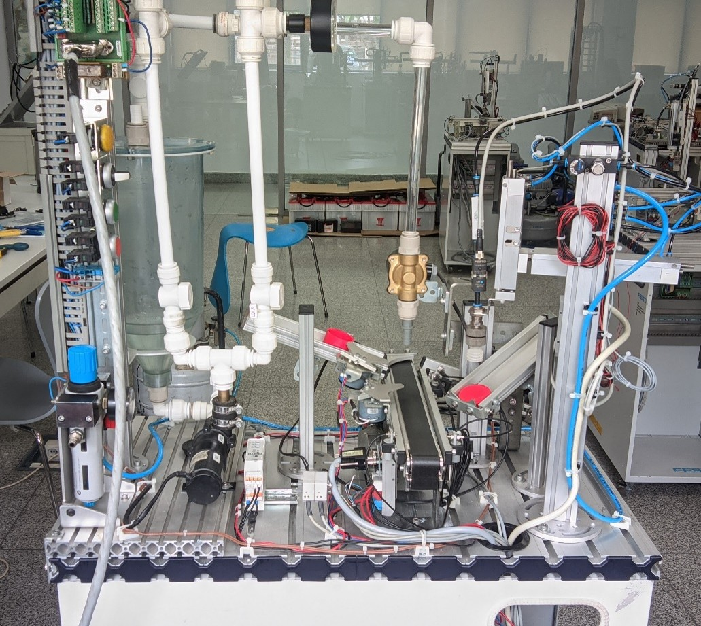

Portofolio
Implementasi nyata kontrol industri, pemrograman logika otomatis, dan sistem integrasi mandiri.

Water Filing + Pick and Place Controlled using Web Browser
Merancang algoritma Ladder Logic (PLC Siemens) dan sistem kontrol berbasis web untuk mengisi air kedalam wadah di konveyor lalu menutup wadah secara otomatis berdasarkan umpan balik sensor.
Automated Bottle Filling & Capping
Pembuatan prototipe sistem pengisian cairan presisi tinggi. Terintegrasi dengan proximity sensor, load cell untuk menimbang volume cairan, dan aktuator solenoid valve.
UAV Mechanism & Integration
(Proyek Pelengkap) Pengembangan mekanik UAV dan gripper otonom. Melatih kepekaan integrasi mekanik-elektrik dan hardware troubleshooting.